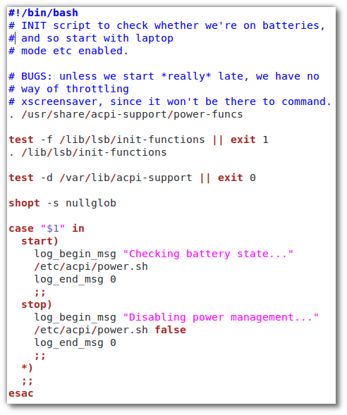

Einleitung
Bei der Arbeit mit der Shell kommt es vor, dass man Befehle immer
wieder (teilweise leicht geändert) eingeben muss. Um sich diese Arbeit
zu ersparen, gibt es die Möglichkeit, Befehle in eine Datei zu
schreiben. Diese Datei nennt sich Skript und kann von der Shell
ausgeführt werden. Die Shell arbeitet dann die Befehle nacheinander
ab.
Die Shell bietet umfangreiche Möglichkeiten zur Programmierung.
Sie erstellen in diesem WebQuest ein eigenes Skript und lernen so deren grundlegende Strukturen kennen.